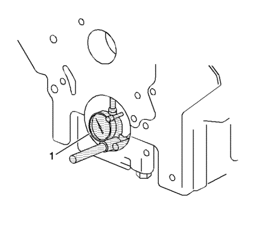
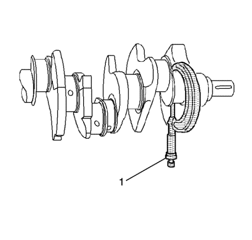
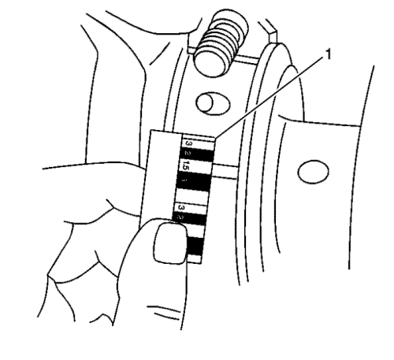

Montaje del cigüeñal y el cojinete
Herramientas especiales
| • | EN-8087 Galga de comprobación del calibre del cilindro |
| • | EN 45059 Medidor de ángulos |
Si desea informarse sobre herramientas regionales equivalentes, consultar Herramientas especiales .

Nota: Si la avería de un cojinete de cigüeñal se debe a otra cosa que no sea un desgaste normal, investigue la causa. Revise el cigüeñal o los orificios de los cojinetes de biela.
Use este procedimiento para comprobar los orificios de los cojinetes de biela o de los cojinetes de bancada:
| • | Apriete la placa de asiento según las especificaciones con ayuda del medidor EN 45059. |
| • | Mida el orificio del cojinete con la galga EN-8087 (1) para ver si presenta excentricidad o conicidad. |
| • | No debería haber conicidad ni excentricidad. |
Selección de cojinetes
- Mida la holgura de los cojinetes para determinar el tamaño correcto de la pieza de suplemento del cojinete de repuesto. Hay 2 formas de medir la holgura de los cojinetes. El método A ofrece unos resultados más fiables y es el que se prefiere.
| • | Con el método A se obtienen medidas a partir de las cuales se puede calcular la holgura de los cojinetes. |
| • | Con el método B la holgura se obtiene directamente. El método B no da ninguna indicación de excentricidad. |

Nota: No mezcle piezas de suplemento de distintos tamaños nominales en el mismo orificio de cojinete.
- Para medir la holgura de los cojinetes con el método A, siga este procedimiento:
| 2.1. | Mida el diámetro del muñón del cojinete de cigüeñal con un micrómetro (1) en varios lugares, con 90 grados de separación. Saque el promedio de las mediciones. |
| 2.2. | Mida la excentricidad y conicidad del muñón del cojinete de cigüeñal. |
| 2.3. | Monte la carcasa inferior del cigüeñal y apriete los tornillos de los sombreretes de cojinete según las especificaciones. |
| 2.4. | Mida el diámetro interior del cojinete (DI) en varios lugares con 90 grados de separación y saque el promedio de las mediciones. |
| 2.5. | Reste la medición del muñón de la medición del DI para determinar la holgura. |
| 2.6. | Determine si la holgura está dentro de las especificaciones. |
| 2.7. | Si no lo están, escoja otras piezas de suplemento. |
| 2.8. | Mida con un micrómetro de interiores el diámetro interior de la biela en la misma dirección que la longitud de ésta. |
| 2.9. | Mida el diámetro interior del cojinete de bancada con un micrómetro de interiores. |

- Para medir la holgura de los cojinetes con el método B, siga este procedimiento:
| 3.1. | Limpie las piezas de suplemento usadas. |
| 3.2. | Coloque las piezas de suplemento usadas. |
| 3.3. | Coloque un plástico de calibración a lo ancho de todo el cojinete. |
| 3.4. | Monte los sombreretes de cojinete. |
Atención: Para evitar la posibilidad de daños en el bloque motor o los sombreretes de cojinete del cigüeñal, éstos se embuten en la cavidad del bloque motor con un mazo de cuero, plomo o latón antes de colocar los tornillos. No utilice tornillos de fijación para meter los sombreretes de cojinete del cigüeñal en sus asientos. Si no se sigue este procedimiento, se puede dañar el bloque motor o algún cojinete.
| 3.5. | Coloque los tornillos de sombrerete de cojinete según las especificaciones. |
| | Nota: No gire el cigüeñal. |
| 3.6. | Desmonte el sombrerete del cojinete, dejando el plástico de calibración en su sitio. No importa si el plástico de calibración se adhiere al muñón o al sombrerete del cojinete. |
| 3.7. | Mida el plástico de calibración en su punto más ancho con la escala (1) impresa en su paquete. |
| 3.8. | Retire el plástico de calibración. |
| © Copyright Chevrolet Europe. All rights reserved |